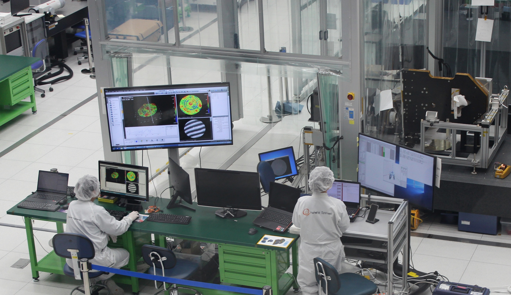
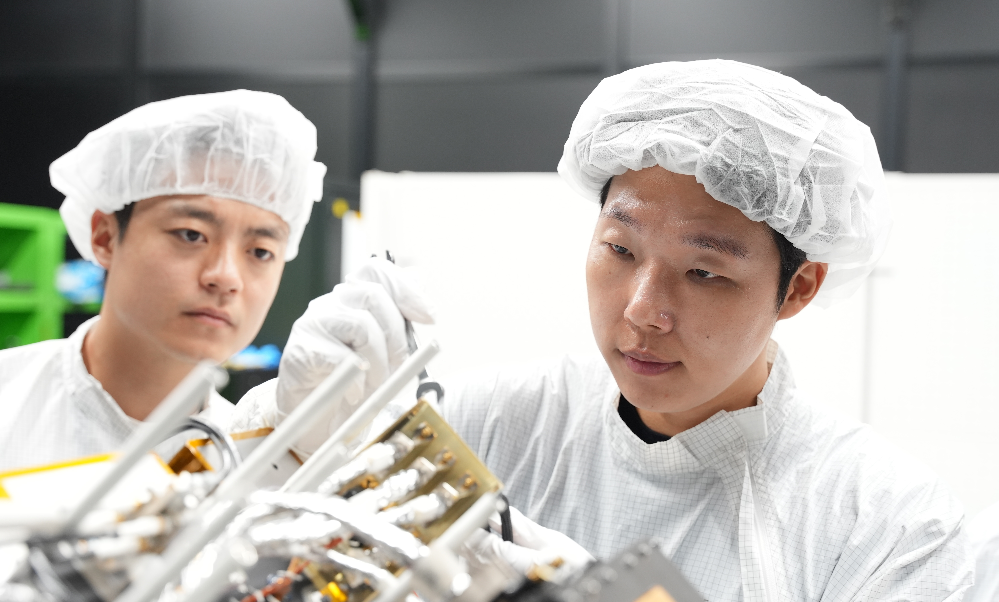
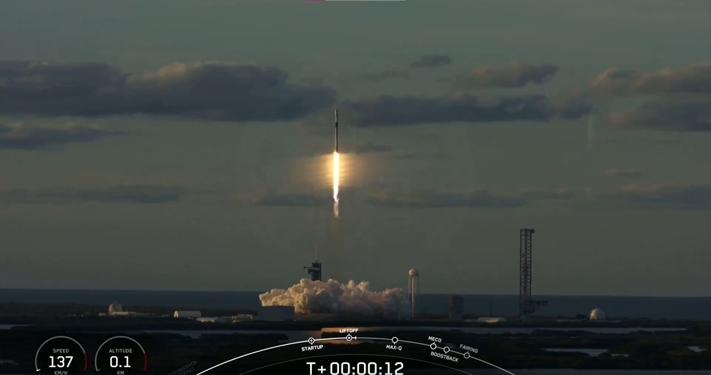

한화시스템, 425사업 'SAR위성 탑재체' 공급… 연구원 3인방 “한국 최초 독자 정찰위성 개발 참여 자부심”
대한민국 최초 독자 정찰위성 2호기 SAR위성이 한국시각 8일 오전 (美 현지시각 7일) 미국 플로리다주 케네디 스페이스 센터에서 스페이스X사의 팰컨9 로켓을 사용해 성공적으로 발사됐다.
방위사업청과 국방과학연구소의 주관으로 진행중인 군 정찰위성사업(일명 425사업)은 대한민국 최초로 한반도와 주변을 감시·정찰하는 SAR(고성능레이다)위성 4기와 EO·IR(전자광학·적외선) 1기를 발사하는 사업으로, 적국의 위협을 실시간 탐지하고 선제 타격하는 '킬 체인의 눈'으로 불린다.
한화시스템은 2018년부터 'SAR위성'의 핵심기술로 꼽히는 'SAR센서'와 '데이터링크 시스템' 개발에 참여, 이번에 발사한 2호기를 포함해 총 4기의 SAR위성 탑재체를 공급한다.
SAR는 지상 및 해양에 레이다파를 순차적으로 쏜 후 레이다파가 굴곡면에 반사되어 돌아오는 미세한 시간차를 선착순으로 합성해 지상 지형도를 만들어내는 레이다 시스템이다. 주·야간 및 악천후와 관계없이 지상을 정밀하게 촬영할 수 있어 EO 위성의 '정찰 사각'을 보완할 수 있다.
 ≫ 한화시스템 용인연구소 위성통합시험장 클린룸“대한민국 최초의 독자 정찰위성 개발에 참여해 강한 자부심 느껴”
SAR위성 개발에 참여한 한화시스템 우주연구소 김성필 전문연구원(33), 이진규 선임연구원(28), 이명재 전문연구원(36)은 SAR위성 발사 성공 소식과 함께 남다른 감회를 전했다.
 ≫ 한화시스템 우주연구소 위성시스템 연구원들이 SAR센서 탑재체 전자부의 케이블 연결상태를 점검하고 있다(왼쪽부터 이진규 선임연구원, 이명재 전문연구원, 김성필 전문연구원)
≫ 한화시스템 우주연구소 위성시스템 연구원들이 SAR센서 탑재체 전자부의 케이블 연결상태를 점검하고 있다(왼쪽부터 이진규 선임연구원, 이명재 전문연구원, 김성필 전문연구원)
김성필 전문연구원은 SAR센서 탑재체 안테나부(SAS, SAR Antenna Subsystem) 개발에 참여했다. 레이다를 이용해 영상을 획득하는 SAR위성은 레이다파를 방사하는 안테나가 위성의 성능을 좌우한다. 이에 해외 선진 업체에서도 안테나는 기술 이전 불가 항목으로 지정한 만큼 자체적으로 핵심 기술을 연구하고 확보해야 했다.
김 전문연구원은 “최근 정부용 정찰위성 최종 호기의 SAR센서 탑재체 전자부 및 안테나 간 통합 시험을 총괄해 성공적으로 마쳤다. 시험을 준비하는 일련의 과정을 통해 위성 개발 프로세스에 대한 경험치를 확보할 수 있었다”라며 “개발에 참여하며 위성 기술 자립에 대한 중요성을 절실히 느꼈던 만큼 대한민국 최초의 독자적 감시정찰 위성 개발에 참여할 수 있어 강한 자부심이 든다”라고 전했다.
 ≫ 한화시스템 우주연구소 위성시스템 김성필 전문연구원(앞)과 이진규 선임연구원이 SAR센서 탑재체 기능 및 성능 시험 결과를 분석중이다
≫ 한화시스템 우주연구소 위성시스템 김성필 전문연구원(앞)과 이진규 선임연구원이 SAR센서 탑재체 기능 및 성능 시험 결과를 분석중이다
이명재 전문연구원은 2019년부터 SAR위성 개발에 참여해왔다. SAR위성 운용을 위한 전자부(SES, SAR Electronics Subsystem)과 데이터링크부(DLS, Data Link Subsystem)의 조립·통합·시험을 비롯해 핵심 전장품(電裝品) 국산화 개발을 담당하고 있다.
우주 궤도에 진입한 위성은 기계적 고장에 대한 대응이 불가능하다. 그렇기 때문에 지상에서 발사 및 궤도 환경에 대한 완벽한 검증이 중요하다. 이 전문연구원은 “국산화한 전장품을 포함한 위성의 모든 부분에 대해 세밀한 분석과 검증으로 완벽하게 개발해내야 한다는 긴장감이 부담으로 다가오기도 했다”며, “하지만 국내외 우주 전문가들과 협업하며 핵심 기술의 국산화 가능성을 확인했고, 성공적으로 개발할 수 있다는 확신을 얻을 수 있었다”라고 전했다.
이명재 전문연구원은 정찰위성 개발을 통해 쌓은 노하우를 토대로 대한민국이 우주기술 강국이 되도록 백의종군의 마음으로 힘을 보탤 것이라는 의지를 내비쳤다.
 ≫ 한화시스템 우주연구소 위성시스템 이진규 선임연구원(왼쪽)과 이명재 전문연구원이 SAR센서 탑재체 전자부의 케이블 연결상태를 점검하고 있다이진규 선임연구원은 SAR센서 탑재체 전자부의 국산화 개발을 맡고 있다. 인공위성은 혹독한 우주 환경을 버티며 임무를 수행해야 하기 때문에 개발 과정에서 우주 환경 모사 시험이 반드시 필요하다.
이 선임연구원은 “우주 환경시험은 열·진동·충격 시험 등 기계공학적인 지식을 동반해 분석해야 하기 때문에 물리·신소재·우주항공·전기전자공학 등 다양한 분야를 아우르는 지식이 필요해 끊임없이 학습하고 연구해야 했다”라며, “이런 과정을 통해 실제 위성에 탑재할 비행 모델(FM, Flight Model) 개발에 성공할 수 있었다”라고 전했다.
이진규 선임연구원은 정찰위성 최종 호기 발사까지 성공적으로 마칠 수 있길 바라며, 나아가 경쟁력 있는 국산 위성을 개발해 글로벌 수출 시장에 진출할 수 있기를 기대한다고 전했다.
 ≫ 한화시스템 우주연구소 위성시스템 연구원들이 SAR센서 탑재체 전자부 및 안테나 연동시험 결과를 분석중이다(왼쪽부터 이진규 선임연구원, 김성필 전문연구원, 이명재 전문연구원)
≫ 한화시스템 우주연구소 위성시스템 연구원들이 SAR센서 탑재체 전자부 및 안테나 연동시험 결과를 분석중이다(왼쪽부터 이진규 선임연구원, 김성필 전문연구원, 이명재 전문연구원)
SAR위성은 빛을 잘 반사하는 금속 표적을 구분하는 데 독보적이다. 단단한 장갑과 금속으로 만들어진 레이다·미사일·탱크와 같은 군사 장비들이 수풀과 위장막 등으로 가려진 경우 EO로는 관측이 어려운 반면 SAR로는 식별이 가능하다. 향후 'SAR위성'이 전력화되면 EO·IR위성과 함께 군 정찰위성 체계를 구축할 수 있어, 선진국 수준의 감시∙정찰 능력을 갖추게 된다. 동시에 핵∙대량살상무기(WMD)위협 대응 체계 구축 및 전작권 전환에도 기여할 수 있을 것으로 기대하고 있다.
이러한 이유로 SAR기술은 1960년대 초부터 군사·정보 분야에서 활용됐으며, 최근에는 SAR관련 많은 기술들이 민간에 공개 및 활용되고 있다. ▲넓은 농경지의 토양 수분 분석을 통해 작황 상황을 파악하고 ▲지하에 매장된 자원을 탐사하기도 하며 ▲지진의 전조(前兆)증상인 토양 액상화·지각 이동 등을 분석하기도 한다.
미국 시장 조사 기업 '글로벌 마켓인사이트(Global Market Insight)'에 따르면 2022년에 55억 달러(한화 약 7조 4000억원) 규모였던 SAR 시장은 2023년부터 2032년까지 연평균 성장률(CAGR) 10%를 기록할 것으로 예측된다. ▲농업 ▲도시 계획 ▲인프라 및 자연자원 관리를 포함한 여러 민간 분야에서 지리정보 수요가 증가해 폭발적인 성장이 기대된다.
한화시스템은 정부용 정찰위성뿐만 아니라 민간 위성 분야를 개척, 새로운 사업에 적극 투자하고 있다. 글로벌 시장 진출은 물론 아이스아이(ICEYE)·카펠라 스페이스(Capella Space) 등 해외 선진 업체들과 협업을 통해 글로벌 커버리지까지 가능한 위성 통합 솔루션 구축을 추진 중이다.
 ≫ 8일 오전 8시 17분(한국시간) 미국 플로리다주 케네디우주센터에서 우리 군의 독자정찰위성 2호기를 탑재한 미 스페이스X사의 팰컨-9 발사체 발사되는 모습_스페이스X 제공김정호 한화시스템 항공∙우주부문 사업대표는 "우주에서 지상의 수십 센티미터(㎝) 크기 물체를 식별할 수 있는 정찰위성은 기술 장벽이 높아 미국·일본·유럽연합(EU) 등 소수의 국가만이 운용해왔다"라며, "한화시스템은 국내 유일하게 EO∙IR∙SAR 탑재체 기술을 모두 보유하고 있으며, 이러한 기술 역량과 경험을 바탕으로 대한민국 감시정찰 자산 확보에 기여할 수 있도록 힘쓸 것이다"라고 전했다.